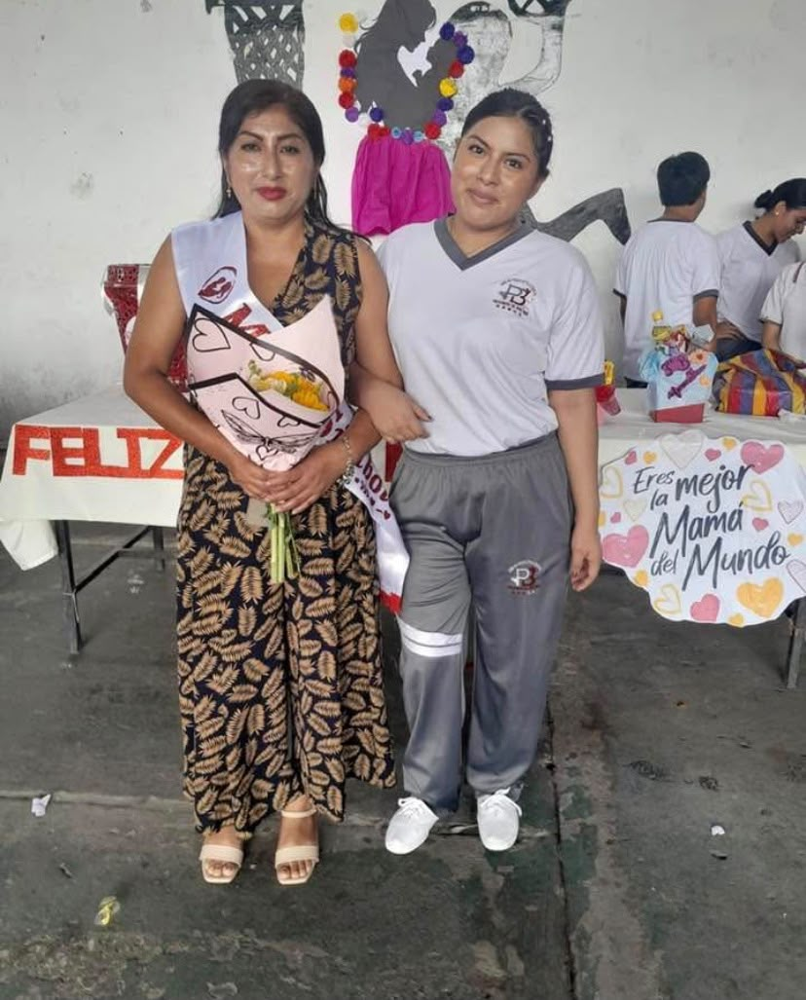
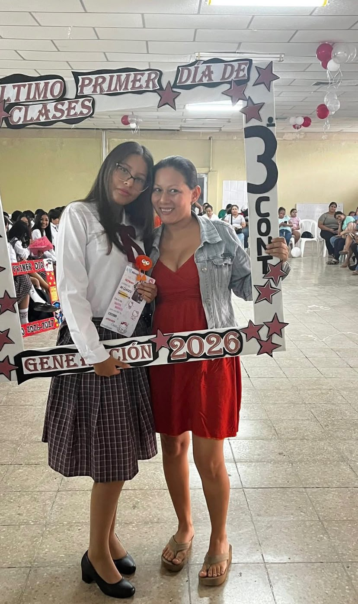
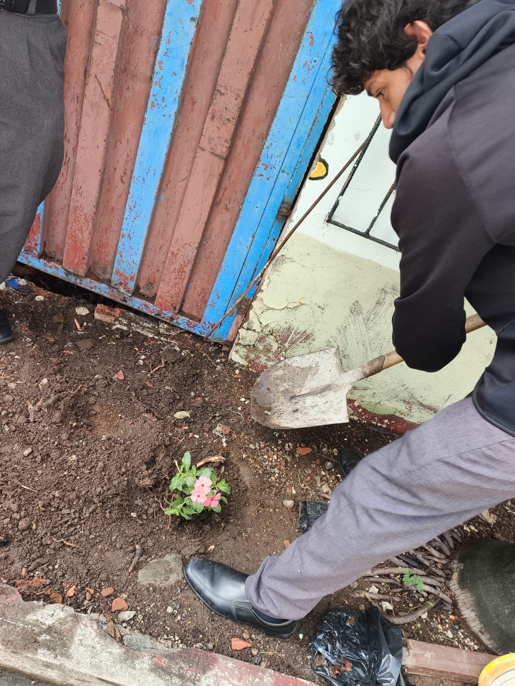
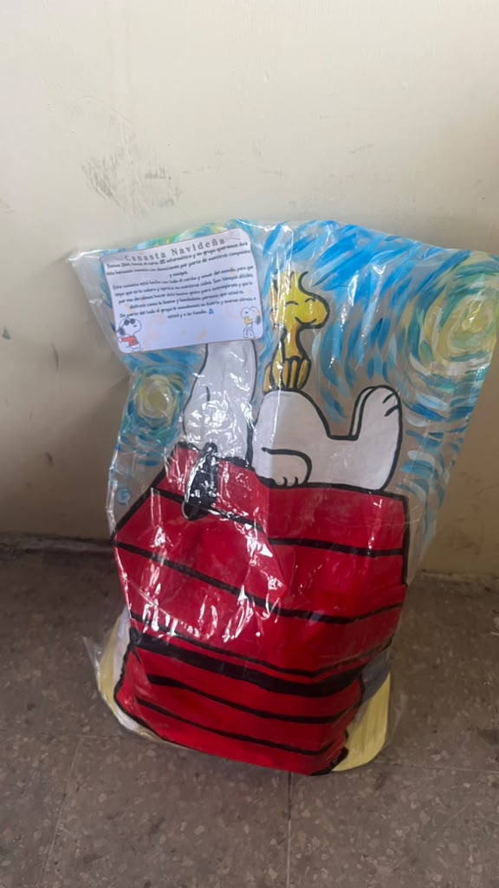
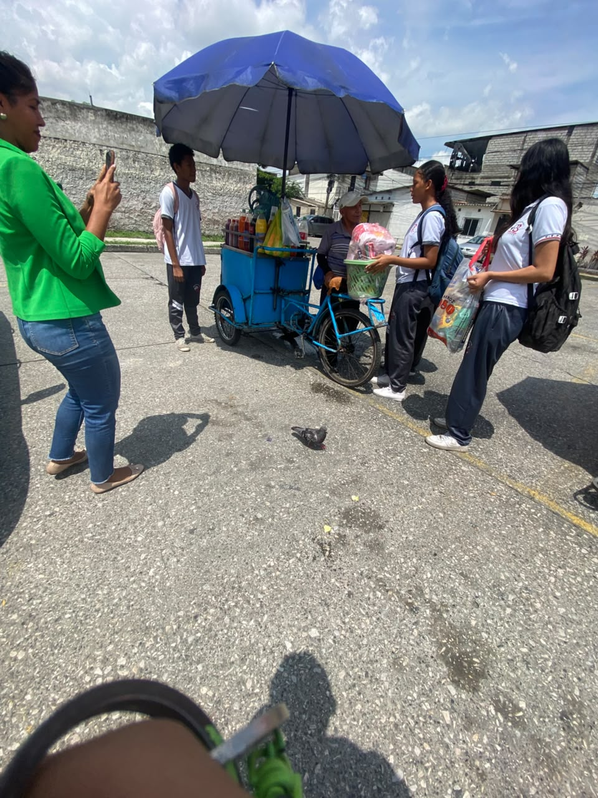

Actividad 1: Integración del primer día de clases
Esta actividad se realizó durante el primer día de clases, promoviendo la integración entre estudiantes y padres de familia. Fomenta la unión, la convivencia y el compañerismo, fortaleciendo los lazos entre la comunidad educativa. Representa valores como el respeto, la amistad, la participación y el trabajo en equipo.

Actividad 2: Celebración del Día de la Madre
Esta actividad se realizó para homenajear a las madres y reconocer el amor, esfuerzo y dedicación que brindan a sus familias. Fomenta el cariño, la gratitud y la unión familiar. Representa valores como el amor, el respeto, el agradecimiento y la solidaridad, recordándonos la importancia de valorar a quienes nos cuidan y apoyan.

Actividad 3: Plantando rosas en nuestra institución
En esta actividad sembramos rosas dentro de nuestra institución con el propósito de embellecer sus espacios y crear un ambiente más agradable. Fomenta el cuidado del medio ambiente, la responsabilidad y el trabajo en equipo. Representa valores como el compromiso, el respeto por la naturaleza, la cooperación y el amor por nuestra institución.

Actividad 4: Armando canastas de víveres
En esta actividad organizamos y preparamos canastas de víveres destinadas a personas y familias que necesitan ayuda. Fomenta la generosidad, la empatía y el compromiso con quienes más lo necesitan. Representa valores como la solidaridad, la colaboración, la bondad y el servicio a los demás, enseñándonos que compartir también es una forma de demostrar amor.

Actividad 5: Entrega de canastas solidarias
Como parte final de nuestra labor solidaria, realizamos la entrega de las canastas de víveres a las personas necesitadas. Esta acción fomenta la ayuda desinteresada, la empatía y el compromiso social. Representa valores como la generosidad, la humildad, el respeto y la solidaridad, demostrando que con pequeñas acciones podemos brindar esperanza y alegría a quienes más lo necesitan.